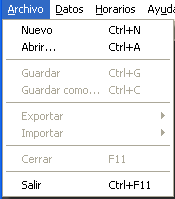
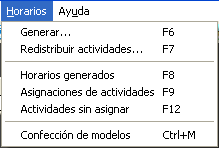

|
Instrucciones rápidas |
¡¡Tres pasos para generar
horarios!!
Paso 1. Crear un archivo de horarios

Los archivos de Áncora tienen extensión .ANC.
Para crear un archivo:
-
En el menú Archivo haga clic en Nuevo
-
Establezca el nombre y la ubicación y elija aceptar
Para abrir un archivo existente:
-
En el menú Archivo haga clic en Abrir
-
Busque el archivo y elija aceptar

Nota: El sistema reconocerá si es o no un archivo suyo.
Paso 2. Entrar los datos necesarios
Para introducir nuevos datos o cambiar los existentes es necesario seguir una metodología, a causa de las dependencias que tienen algunas informaciones con otras. Se recomienda seguir el orden que tienen las opciones en el menú Datos.

Lo que encierra el rectángulo rojo son los datos necesarios para generar horarios. Lo encerrado en el rectángulo azul son herramientas de análisis y duplicación de información.
IMPORTANTE:
El análisis de la información que se posee es de vital importancia, pues evita que al generar horarios ocurran rechazos de actividades.
Paso 3. Generar horarios
Siga el orden en que aparecen las opciones en el menú Horarios.
